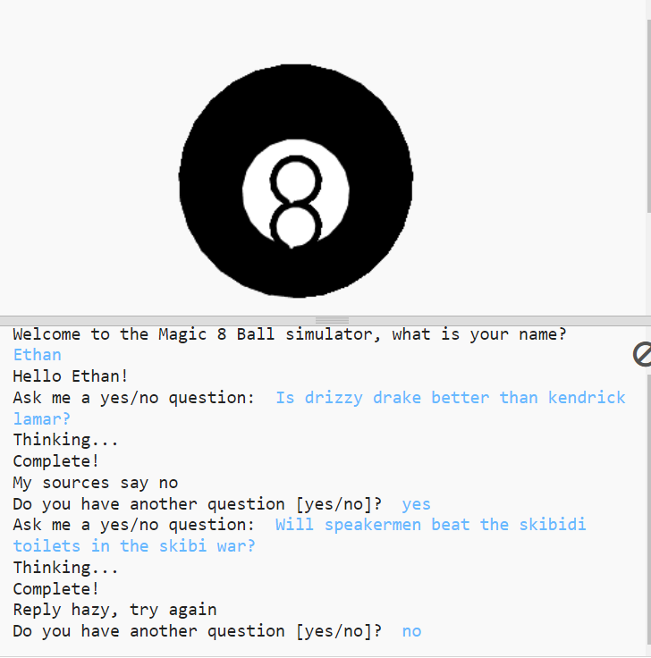
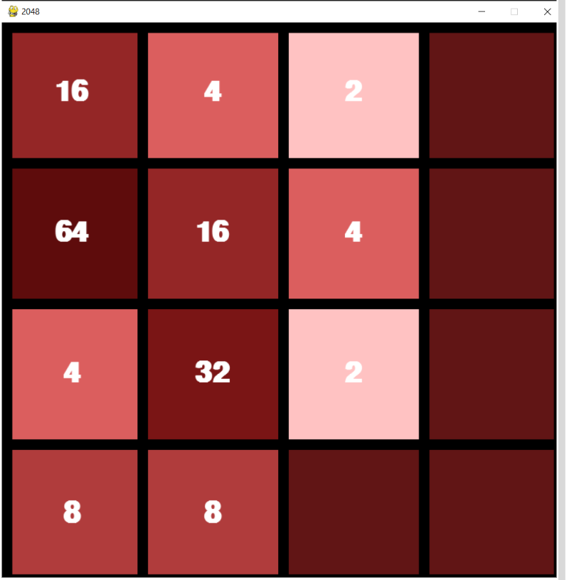

Home
Portfolio
About Me
This is my Portfolio Page!
1.1 Magic 8 Ball Simulator

Our first project that Katelyn and I created is a Magic 8 Ball where a user can input any yes/no questions of their choice and the 8 ball will give a variety of different responses. We were able to create a virtual image of a 8 ball and during the thinking process when
a user asks a question, the virtual 8 ball will vibrate different colors to signify its thinking. The user can ask as many questions as they would like until they want to stop.
1.2 2048 Game

While being tasked with 1.2 section notes from PLTW, Amir and I explored the different types of code functions that make up the game 2048. Learning and comprehending these functions, we were able to implement data storage, color, and user movement using the arrow keys on a keyboard